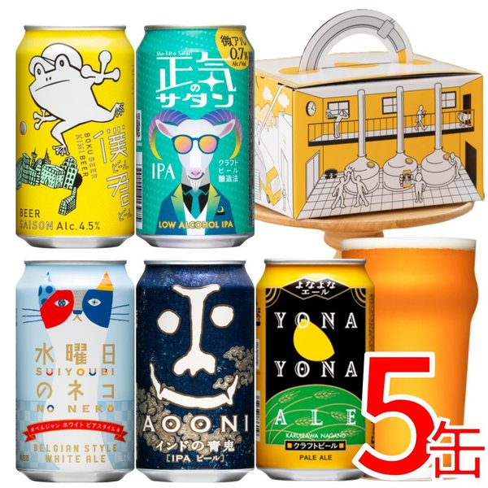
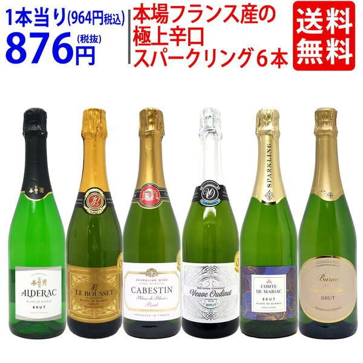
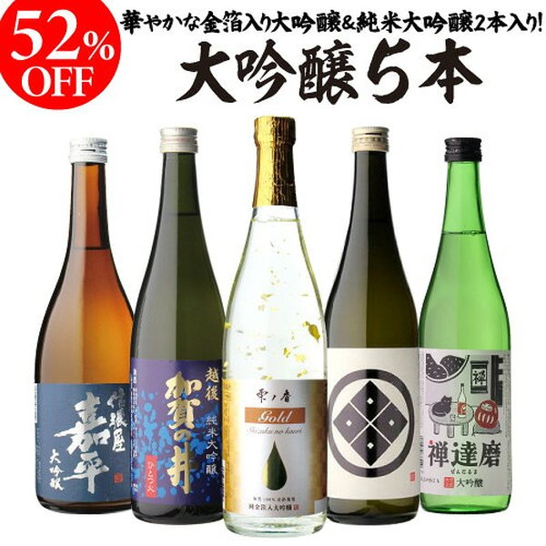
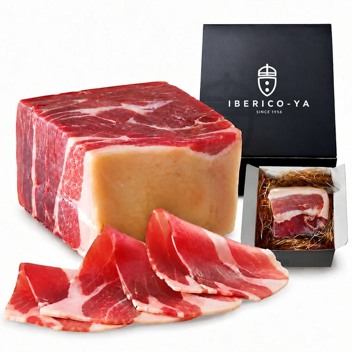
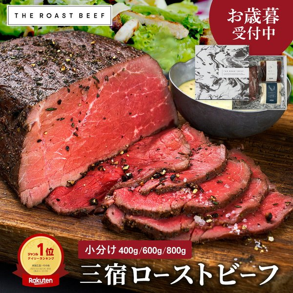
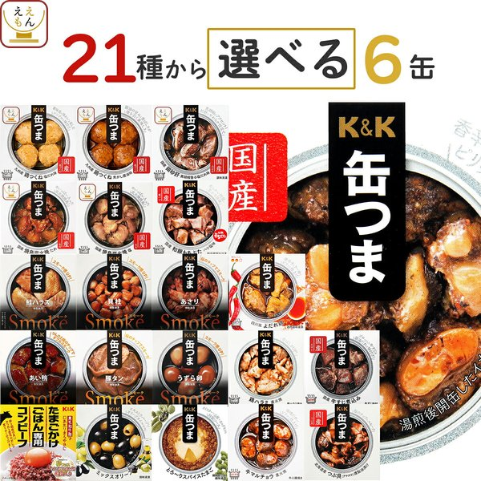
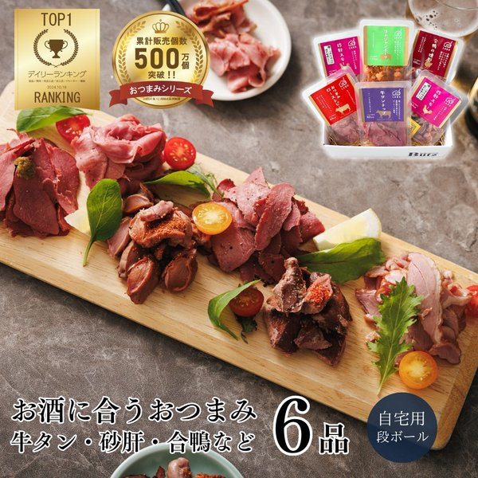
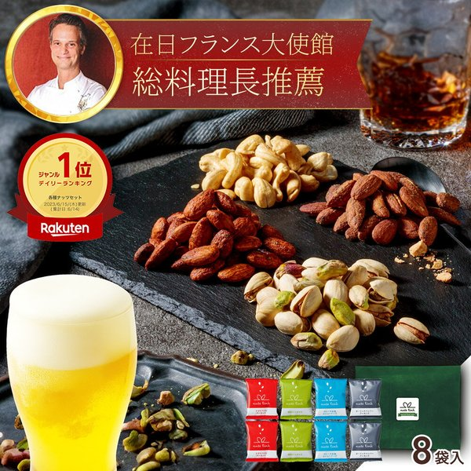
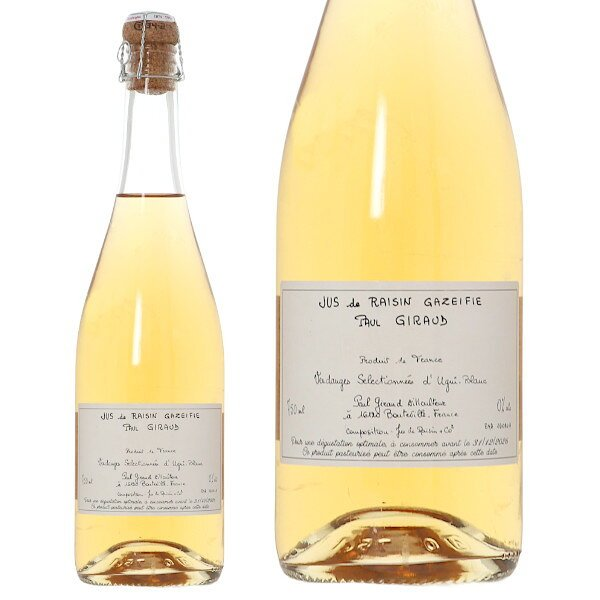
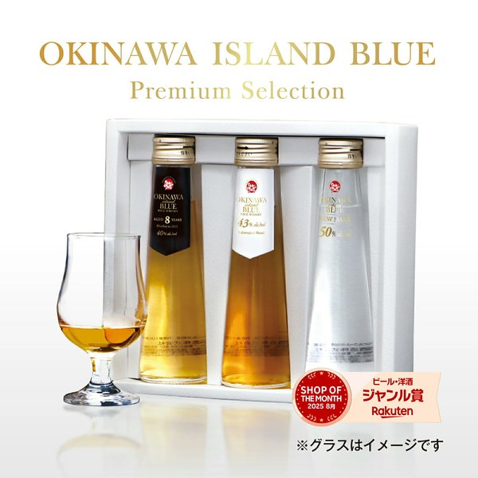

【忘年会・年末年始】おうちパーティーが格上げ！クラフトビール飲み比べ＆絶品おつまみギフトおすすめ10選
忘年会や年末年始は、外に飲みに行くより家で集まる回数が増える時期です。そこで差が出るのが、飲み物とおつまみの「段取り」です。乾杯の1杯と、摘まめるものが揃っていれば、あとは会話で時間が過ぎます。
選ぶ軸は、人数と飲む量、そしてお酒を飲まない人がいるかどうか。ビールは飲み比べセットなら1本ずつ味が違い、話のネタにもなります。ワインや日本酒は本数で選べば、料理に合わせて出し分けられます。おつまみは、開けて出せる缶詰や原木ハム、個包装のナッツがあると、台所に立つ時間を減らせます。ノンアルのスパークリングを1本足しておくと、車で来た人も同じように乾杯できます。
本記事では、楽天市場で人気・高評価の宅飲みのお酒＆おつまみギフト10選を、実売価格とレビュー評価つきで写真付き紹介します。
- おすすめ10選 スペック・特徴比較表
- BEST 1｜クラフトビール 5種飲み比べセット（よなよなエール・IPA等）
- BEST 2｜フランス産 辛口スパークリングワイン 6本セット
- BEST 3｜大吟醸 飲み比べ 720ml×5本（純米大吟醸入）
- BEST 4｜生ハム ミニ原木 ブロック（30ヶ月熟成・スペイン産）
- BEST 5｜熟成赤身肉 ローストビーフ（200g×2〜4個・ソース2種付）
- BEST 6｜缶つま 6缶 詰め合わせ（選べるセット）
- BEST 7｜おつまみアソートセット（牛タン・ローストビーフ・燻製）
- BEST 8｜フレーバーナッツ 詰め合わせ（個包装・8種）
- BEST 9｜ノンアルコール スパークリング（グレープジュース・750ml）
- BEST 10｜OKINAWA ISLAND BLUE プレミアムセレクション 3本セット（各100ml）
- 【読者負担0円】買わなくても得する無料サービス
- まとめ：宅飲み＆おつまみ10選の選び方
| 順位 | 商品名 | ブランド | 最大の特徴・おすすめ理由 | 総合評価 |
|---|---|---|---|---|
| BEST 1 | クラフトビール 5種飲み比べセット（よなよなエール・IPA等） | ヤッホーブルーイング | 5種の味を飲み比べできる | 4.57 |
| BEST 2 | フランス産 辛口スパークリングワイン 6本セット | VERITAS | 1本あたり1,000円を切る | 4.65 |
| BEST 3 | 大吟醸 飲み比べ 720ml×5本（純米大吟醸入） | izumise（いずみ製酢） | 720ml×5本で飲み比べできる | 4.72 |
| BEST 4 | 生ハム ミニ原木 ブロック（30ヶ月熟成・スペイン産） | イベリコ屋 | 30ヶ月熟成の旨み | 4.61 |
| BEST 5 | 熟成赤身肉 ローストビーフ（200g×2〜4個・ソース2種付） | 三宿ローストビーフ | 赤身で脂っこくない | 4.66 |
| BEST 6 | 缶つま 6缶 詰め合わせ（選べるセット） | 国分 K&K | 開けるだけで一品になる | 4.51 |
| BEST 7 | おつまみアソートセット（牛タン・ローストビーフ・燻製） | BUTZ（ブッツ） | 数種類を少量ずつ出せる | 4.80 |
| BEST 8 | フレーバーナッツ 詰め合わせ（個包装・8種） | nuts link | 8種の味を少しずつ楽しめる | 4.62 |
| BEST 9 | ノンアルコール スパークリング（グレープジュース・750ml） | ポールジロー | お酒が飲めない人も乾杯できる | 4.81 |
| BEST 10 | OKINAWA ISLAND BLUE プレミアムセレクション 3本セット（各100ml） | 久米仙 | 3種を少量ずつ飲み比べできる | 4.74 |
クラフトビール 5種飲み比べセット（よなよなエール・IPA等）

よなよなエールで知られるヤッホーブルーイングのクラフトビールを5種飲み比べできるセット。IPAや黒ビールなど個性の違う缶が入り、1本ずつ味を比べられます。2,365円と手頃で、忘年会の手土産や自宅飲みの最初の一杯に向いています。楽天市場での実売価格は約2,365円（2026年11月時点）。
- 5種の味を飲み比べできる
- 2,365円で手頃
- レビュー16,964件・評価4.57
- 缶の種類はセット内容に固定されている
フランス産 辛口スパークリングワイン 6本セット

フランス産の辛口スパークリングワインを6本まとめたセット。1本あたり1,000円を切る価格で、乾杯用に冷やしておけば人数が集まる場面でも足ります。辛口なので食事に合わせやすく、年末年始の食卓の定番にしやすい構成です。楽天市場での実売価格は約5,780円（2026年11月時点）。
- 1本あたり1,000円を切る
- 辛口で食事に合わせやすい
- レビュー3,242件・評価4.65
- 6本入る冷蔵庫のスペースが必要
大吟醸 飲み比べ 720ml×5本（純米大吟醸入）

新潟の酒を中心に、大吟醸を720mlで5本飲み比べできるセット。純米大吟醸も含まれ、辛口からやや甘口まで香りと味の違いを比べられます。四合瓶5本は、日本酒好きが集まる忘年会や、年末に少しずつ飲み比べたい場面に向いています。楽天市場での実売価格は約5,980円（2026年11月時点）。
- 720ml×5本で飲み比べできる
- 純米大吟醸を含む構成
- レビュー1,008件・評価4.72
- 飲み切れない場合は冷蔵庫で保管する
生ハム ミニ原木 ブロック（30ヶ月熟成・スペイン産）

スペイン産アンダルシアポークの生ハムを、ミニ原木のブロックで届ける一品。30ヶ月熟成させた旨みがあり、薄く切るだけで前菜になります。原木のまま食卓に置けば、年末の集まりでその場で切り分ける演出にもなります。楽天市場での実売価格は約5,990円（2026年11月時点）。
- 30ヶ月熟成の旨み
- 切りたてを出せる原木ブロック
- レビュー532件・評価4.61
- 切るためのホルダーや包丁があると扱いやすい
熟成赤身肉 ローストビーフ（200g×2〜4個・ソース2種付）

赤身肉を低温で仕上げたローストビーフを、200gずつ小分けにしたセット。自家製ソースが2種付き、切り分けて盛るだけでメインになります。赤身なので脂が重くならず、ワインやビールとも合わせやすい。年末の食卓のメインを任せられる一品です。楽天市場での実売価格は約5,990円（2026年11月時点）。
- 赤身で脂っこくない
- ソース2種付きで盛るだけ
- レビュー422件・評価4.66
- 冷蔵品のため、届いたら早めに食べ切る
缶つま 6缶 詰め合わせ（選べるセット）

国分のK&K「缶つま」を6缶詰め合わせたセット。肉や魚介の酒のつまみが缶に入っており、開けるだけで一品になります。常温で保存できるので、急な来客や年末の買い出し前の保険として置いておけます。内容を選べるため、好みに合わせて組み立てられます。楽天市場での実売価格は約3,998円（2026年11月時点）。
- 開けるだけで一品になる
- 常温保存で非常食にもなる
- レビュー347件・評価4.51
- 缶の内容を選ぶ手間がかかる
おつまみアソートセット（牛タン・ローストビーフ・燻製）

牛タンやローストビーフ、燻製などを詰め合わせたおつまみのアソート。1〜2人前で、ビールにもワインにも合う味が入っています。自分で作らずに数種類を出せるので、少人数の宅飲みや、手土産としても使いやすいセットです。楽天市場での実売価格は約3,280円（2026年11月時点）。
- 数種類を少量ずつ出せる
- ビールにもワインにも合う
- レビュー152件・評価4.8
- 1〜2人前なので、大人数には量が足りない
フレーバーナッツ 詰め合わせ（個包装・8種）

味付けを変えたナッツを個包装で詰め合わせたセット。甘い味から塩気のある味まで揃い、ビールにも甘い酒にも合わせられます。個包装なので、忘年会の手土産や職場への差し入れとしても配りやすい。日持ちするため、年末年始に常備しておけるのも利点です。楽天市場での実売価格は約2,385円（2026年11月時点）。
- 8種の味を少しずつ楽しめる
- 個包装で配りやすい
- レビュー1,131件・評価4.62
- 味付けが濃いめのため、量を食べると塩分が気になる
ノンアルコール スパークリング（グレープジュース・750ml）

フランスのポールジローが手がけるノンアルコールのスパークリング。ぶどうの果汁を発酵させずに仕上げた炭酸飲料で、ワインのような香りと辛口の味わいがあります。お酒を飲まない人や車で来る人がいる場面でも、乾杯を同じ形で揃えられます。楽天市場での実売価格は約2,480円（2026年11月時点）。
- お酒が飲めない人も乾杯できる
- ワインに近い辛口の味わい
- レビュー32件・評価4.81
- 入荷待ちになることがある
OKINAWA ISLAND BLUE プレミアムセレクション 3本セット（各100ml）

沖縄の久米仙が手がけるウイスキー3種を、各100mlのミニボトルで飲み比べできるセット。少量ずつ味を比べられるので、気に入った味を後から大きいボトルで買う選び方ができます。ギフト包装にも対応し、お酒好きへの手土産として渡しやすいです。楽天市場での実売価格は約3,980円（2026年11月時点）。
- 3種を少量ずつ飲み比べできる
- 気に入った味を後から選べる
- レビュー70件・評価4.74
- 各100mlなので、1本ずつでは量が少ない
この記事の商品を買う前に、まずは無料で得する選択肢をチェック。どれも登録・利用は0円で、無料期間中に解約すれば料金はかかりません。読みたい雑誌がある人、ポイントを貯めたい人、アンケートなら気軽という人、それぞれに合うものを選べます。
初回31日無料・無料期間中に解約すれば0円 → 楽天ポイントモール｜登録無料で毎日ポイ活
買い物なしでもポイントが貯まる無料サービス → 楽天インサイト｜アンケートに答えてポイント
登録無料・すきま時間のアンケートで貯まる → 楽天カード｜年会費永年無料
新規発行・年会費ずっと0円 →
4つのサービスの違いと使い分けは「出費0円で得する！買わずにポイントが貯まる無料サービス厳選4選」でまとめています。
💡 まとめ：宅飲み＆おつまみ10選の選び方
年末の集まりは、飲み物2種類と、開けて出せるおつまみ3種類があると足ります。乾杯用にクラフトビールの飲み比べかスパークリングワイン、食事に合わせるなら日本酒の飲み比べを。おつまみは、生ハムの原木やローストビーフをメインに、缶つまとナッツを脇に置けば、台所に戻る回数が減ります。お酒を飲まない人が来る場合は、ノンアルのスパークリングを1本用意しておくと、全員で同じように乾杯できます。
楽天市場では「5と0のつく日」や「お買い物マラソン」などのキャンペーンに合わせて購入すると、ポイント還元が最大化してお得に手に入ります。ぜひチェックしてみてくださいね。